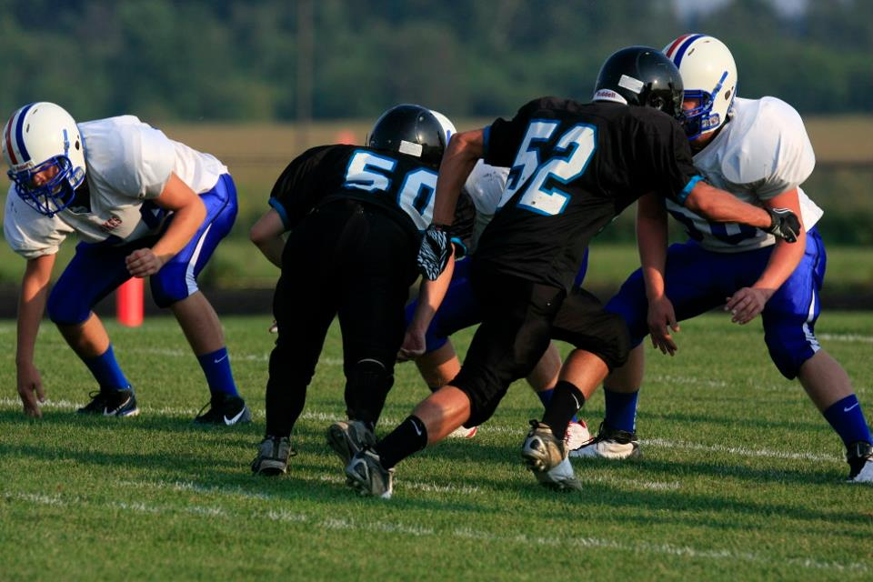

Football
Ever since I was a child football has been apart of my life. My grandpa was a huge sports fan and he loved everything Chicago. Mainly he loved the Chicago Bears. Growing up whenever we went to grandma and grandpa's for sunday dinner we would watch the Bears play. Always hoping for a playoff berth or a SuperBowl apperance. When I was in 8th grade I got the courage to join my middle school football team and I became a Northwood WarHawk. I played all through out high school. Today I love watching different teams and players. I play fantasy football with my friends and studying players has become a niche hobby of ours. My favorite thing about football would be college football. There is nothing quite like the vibe big college football games bring. My favorite team would be the Michigan Wolverines. I one day hope to see a game at the Big House in Ann Arbor.
My Team
The Big House
The home football stadium for the University of Michigan Wolverines. It is one of the largest stadiums in the United States and holds the record for the largest crowd to ever attend a football game. Michigan Stadium has a capacity of over 100,000 spectators and is an iconic venue for college football.